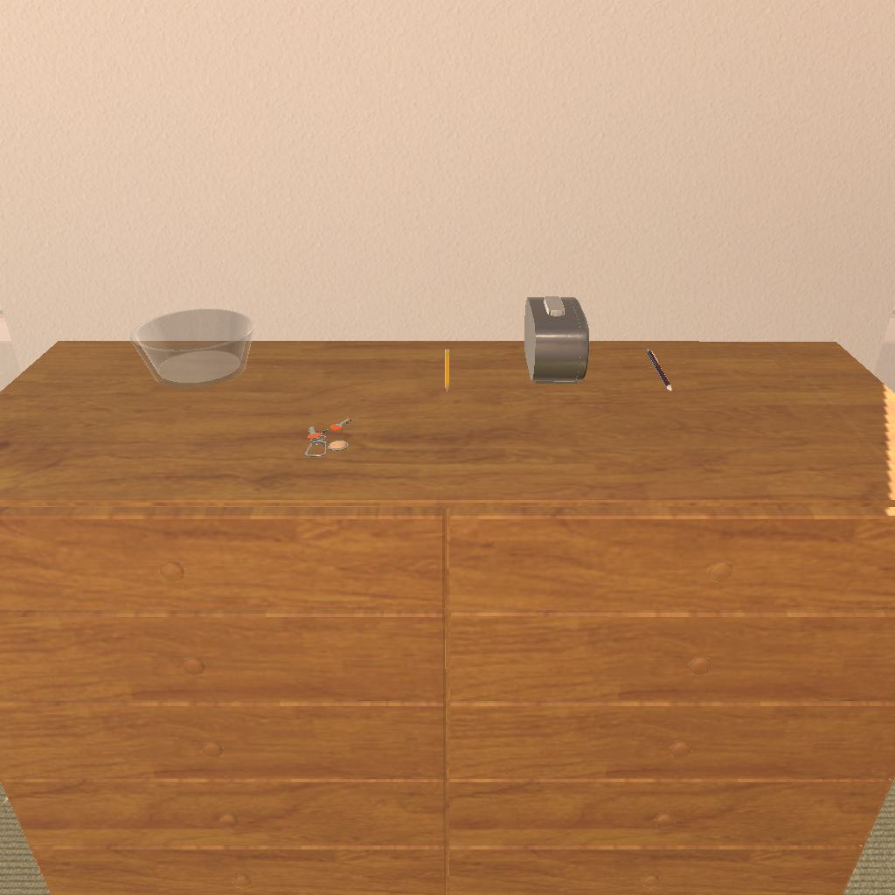

---------------------------------------------------------task: 0---------------------------------------------------------
--------------------------------------------------------------------------------------------------------------------------------------------------------------------
--------------------------------------------------------------------------------------------------------------------------------------------------------------------
Step:--------------------------------------------------------------------------7-------------------------------------------------------------------------------
----------------------------------------
VLM Prompt:
Image1:
Image2:
**Instruction**
1. Analyze the provided images to identify all visible household objects and compare the difference between images (e.h. whether the object is opened or not and taken on hand or not), focusing on those relevant to the task description "look at alarmclock under the desklamp."
2. Use the analysis of images and the task hint "The agent must find an object of the desired type, locate and turn on a light source with the desired object in-hand." to answer the question: what is the most reasonable action in the choices for the task description "look at alarmclock under the desklamp"?
3. Decide and write the answer using the template: The answer is: (i): , where i is the real number. If there is no desired object in images, search every place based on **Initial Observation** to find the object. And if no one is exactly correct, choose a similar answer.
**Initial Observation**
You are in the middle of a room. Looking quickly around you, you can see bed (1), sidetable (1), drawer (1-11), dresser (1), safe (1), laundryhamper (1), garbagecan (1)
**Answer Choices**
(1): go to bed 1
(2): go to drawer 1
(3): go to dresser 1
(4): go to drawer 3
(5): go to drawer 4
(6): go to drawer 5
(7): go to drawer 6
(8): go to drawer 7
(9): go to drawer 8
(10): go to drawer 9
(11): go to drawer 10
(12): go to drawer 11
(13): go to safe 1
(14): go to laundryhamper 1
(15): go to garbagecan 1
(16): open drawer 2
(17): close drawer 2
(18): examine drawer 2
**Answer**
Let's think step by step by following the instructions.
----------------------------------------
----------------------------------------
Original Response:
The task description states "look at alarmclock under the desklamp." Based on the images provided:
Image1:
- There is a desklamp on the sidetable next to the bed.
- There is no visible alarm clock under the desklamp or elsewhere in the image.
Image2:
- There is no desklamp or alarm clock visible on the dresser.
The task hint suggests that the agent needs to find an alarm clock and then locate and turn on a light source with the alarm clock in-hand. Since the alarm clock is not visible in the images provided, we must search for it based on the initial observation.
The initial observation lists several locations to search: bed, sidetable, drawers, dresser, safe, laundry hamper, and garbage can. Since the dresser (Image2) does not have the alarm clock, and the sidetable (Image1) only has a desklamp, we can eliminate those options.
We should search the drawers, as they are common places to store an alarm clock. Since we do not have information on which drawer might contain the alarm clock, we can start with the first one and proceed sequentially.
The answer is: (2): go to drawer 1.
----------------------------------------
----------------------------------------
>>> Refine Original VLM Response and Get Pure Action: go to drawer 1
----------------------------------------
-----------------------------------------------------------------
Running time: 14.724382400512695 seconds
Total Money: 0.21453999999999998
-----------------------------------------------------------------
-----------------------------------------------------------------
Text Observation:You arrive at loc 2. The drawer 1 is closed.
-----------------------------------------------------------------
UNSUCCEED